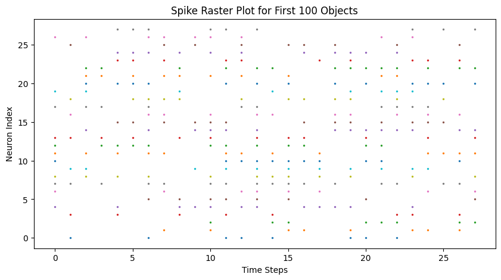

1Industrial Internet of Things, Hochschule Bielefeld
2Cognitronics & Sensor Systems, Universität Bielefeld
This paper presents a novel architecture that combines Spiking Neural Networks (SNN) with transfer learning for real-time human presence detection using event-based cameras. The architecture, deployed on edge computing devices (i.e. NVIDIA Jetson Xavier NX), integrates object detection, transfer learning with SNN, human recognition, localization, tracking, feature extraction, multi-core processing, and real-time analysis. It efficiently adapts pre-trained Convolutional Neural Network (CNN) weights to SNNs, allowing event-driven processing, and maintains a spike train dataset for object information. The architecture is adaptable for applications in security, surveillance, and behavioral research. Extensive real-time testing demonstrates its robustness and adaptability in dynamic environments.
The execution methodology of the proposed neuromorphic computing application. The execution structure represents the transfer of learning from a CNN to a Spiking Model of the LIF Neural Model. Real-time implementation is utilized for object detection with new data, which is then stored in a Spike Train for future predictions using the Spiking Model.
* This 3D plot offers a visual representation of detected humans along with their corresponding spike trains.
* The right image illustrates the data of the first 25 objects along with 0-75 objects,
* And the right 3d plot provides an overview of the data from first 100 detected objects.

* This plot offers a visual representation of spike trains dataset based on the activity of multiple neurons over-time.
* Neurons are represented along the y-axis, and time is along the x-axis.
* Each spike (i.e., action potential) of a neuron is marked as a dot at its corresponding time of occurrence.
* Computational cost efficiency comparison of the system between object detection and no object detection.
* The system’s computational cost remains at a minimum state during periods of inactivity.
* Object detection, on the other hand, raises the computing cost, as indicated by ’Object Detected’.
Upcoming